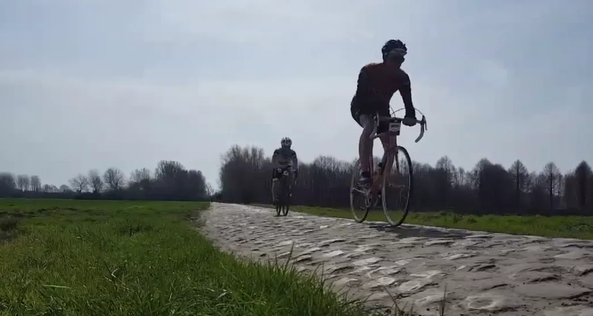

BREAKING – Dansk retrocykelhold chokerer med ny træningstrend

Jaja – I bedste click-bait stil. Men den er god nok!
Spørg i cykelmotionistmiljøet hvad den dedikerede amatørrytter gør, når efteråret melder sin ankomst og lysten til at køre legendariske stigninger og klassiske ruter indfinder sig?
Ja, så sætter man sig på hometraineren indendørs, i tørvejr med en blæser foran og finder en interaktiv udgave af den ønskede rute. Naturligvis med mekanisk climb-function og vibrerende ”road-feel” fornemmelse på traineren, så de imaginære brosten tydeligt kan føles under cyklen. The golden standard of training.
Ren træningsnirvana, sådan cirka.
Men nej – det er så IKKE den vej Squadra Molteni kører.
Næste weekend drager holdet således til Oudenaarde i Belgien for at træne på de samme smalle landeveje som De Ronde – Flandern Rundt – gæster i forårets største klassiker. Der skal køres på brosten, der skal bestiges mure. Koppenberg, Geraardsbergen, Kanarienberg, Oude Kwaremont og Paterberg bare for af nævne en håndfuld.
Bliver det regn eller sol. Who cares…
Der skal spises fritter og drikkes øl. Der skal forhjulslires med de lokale fans. Der skal gives interviews til belgiske medier på Centrum De Ronde museet i Oudenaarde.

Følg træningsopholdet i den virkelige verden, her på siden.
Kan eventuelt høres som podcast eller på Radio Molteni (kortbølge) mens du sidder på hometraineren.
Deltagere i Squadra Moltenis belgiske træningslejr er:
Kaptajn Bjørnsteen, Svend Seegert, Lars Munch Larsen, Eigil Leegaard, Grane Maaløe, Jeppe Thiemer, Kristian Blume, Pelle Clemmensen
FORZA Vlaanderen!